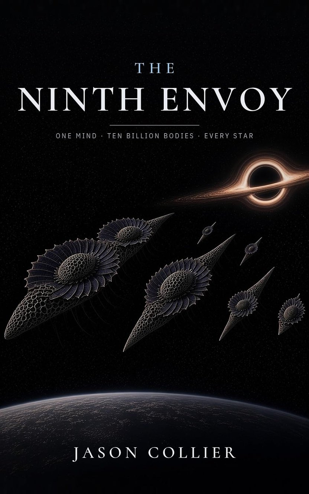
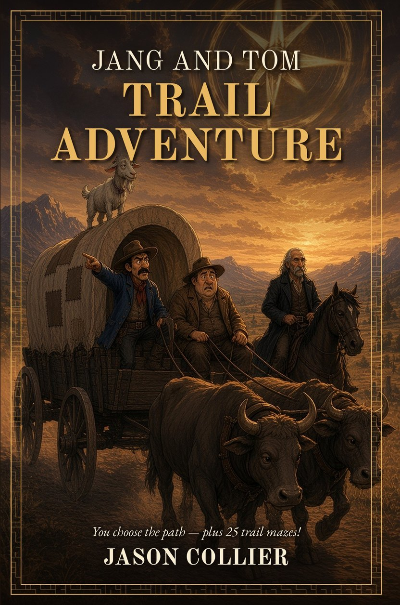

Books / Documentaries / Listen / Play / Paint
CollierEntertainment
Signals older than stars. A hive mind binding the galaxy. Something waiting on the mountain. Two con men leading a wagon train to California.


Latest
Stories by Jason Collier, told across books, audio, games, and art.
New release
Jang and Tom: Wagon Masters
Two thousand miles of pure frontier chaos.
Play the game
Buy the book

Newest book
The Ninth Envoy
You are the hive. One mind across ten billion shards of living black glass, sent out to bind every star in the galaxy. A choose-your-path science fiction adventure with fourteen endings.
Explore the worlds
Stories you can read, hear, and play



Books Science fiction, outdoor suspense, comic Westerns, and choose-your-path adventures. Documentaries Civil War days, the first Thanksgiving, and the butterflies in the garden. Listen Pine Knot radio, Dogs That Chose Me, and Thorne’s journal. Play
Thorne’s Lab, Princeton, 1982.
Play
Thorne’s Lab, Princeton, 1982.
 Paint
The Oil Studio. Mix a color and paint.
Paint
The Oil Studio. Mix a color and paint.
 Bio
Reader mail, events, and media inquiries.
Bio
Reader mail, events, and media inquiries.
Collier Entertainment
collierentertainment.com